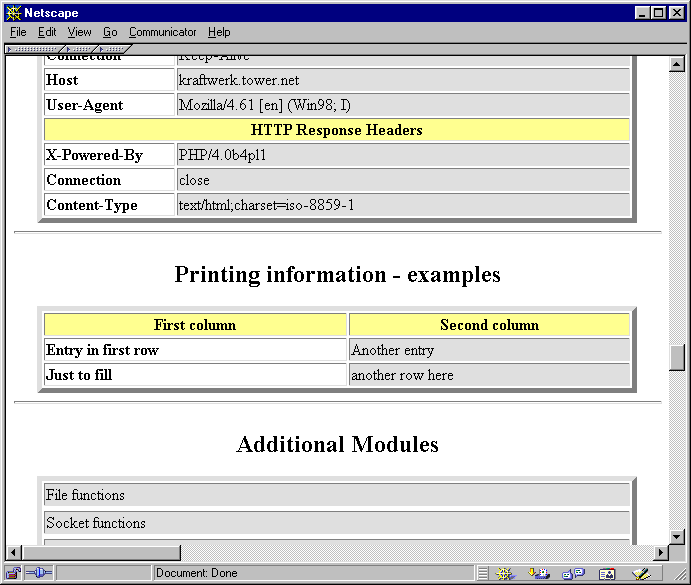

Printing Information
Often it's necessary to print messages to the output stream from your module, just as print() would be used within a script. PHP offers functions for most generic tasks, such as printing warning messages, generating output for phpinfo(), and so on. The following sections provide more details. Examples of these functions can be found on the CD-ROM.
zend_printf()
zend_printf() works like the standard printf(), except that it prints to Zend's output stream.
zend_error()
zend_error() can be used to generate error messages. This function accepts two arguments; the first is the error type (see zend_errors.h), and the second is the error message.
zend_error(E_WARNING, "This function has been called with empty arguments"); |
Tabella 46-16. Zend's Predefined Error Messages.
| Error | Description |
| E_ERROR | Signals an error and terminates execution of the script immediately . |
| E_WARNING | Signals a generic warning. Execution continues. |
| E_PARSE | Signals a parser error. Execution continues. |
| E_NOTICE | Signals a notice. Execution continues. Note that by default the display of this type of error messages is turned off in php.ini. |
| E_CORE_ERROR | Internal error by the core; shouldn't be used by user-written modules. |
| E_COMPILE_ERROR | Internal error by the compiler; shouldn't be used by user-written modules. |
| E_COMPILE_WARNING | Internal warning by the compiler; shouldn't be used by user-written modules. |

Including Output in phpinfo()
After creating a real module, you'll want to show information about the module in phpinfo() (in addition to the module name, which appears in the module list by default). PHP allows you to create your own section in the phpinfo() output with the ZEND_MINFO() function. This function should be placed in the module descriptor block (discussed earlier) and is always called whenever a script calls phpinfo().
PHP automatically prints a section in phpinfo() for you if you specify the ZEND_MINFO function, including the module name in the heading. Everything else must be formatted and printed by you.
Typically, you can print an HTML table header using php_info_print_table_start() and then use the standard functions php_info_print_table_header() and php_info_print_table_row(). As arguments, both take the number of columns (as integers) and the column contents (as strings). Esempio 46-13 shows a source example and its output. To print the table footer, use php_info_print_table_end().
Esempio 46-13. Source code and screenshot for output in phpinfo().
 |
Execution Information
You can also print execution information, such as the current file being executed. The name of the function currently being executed can be retrieved using the function get_active_function_name(). This function returns a pointer to the function name and doesn't accept any arguments. To retrieve the name of the file currently being executed, use zend_get_executed_filename(). This function accesses the executor globals, which are passed to it using the TSRMLS_C macro. The executor globals are automatically available to every function that's called directly by Zend (they're part of the INTERNAL_FUNCTION_PARAMETERS described earlier in this chapter). If you want to access the executor globals in another function that doesn't have them available automatically, call the macro TSRMLS_FETCH() once in that function; this will introduce them to your local scope.
Finally, the line number currently being executed can be retrieved using the function zend_get_executed_lineno(). This function also requires the executor globals as arguments. For examples of these functions, see Esempio 46-14.